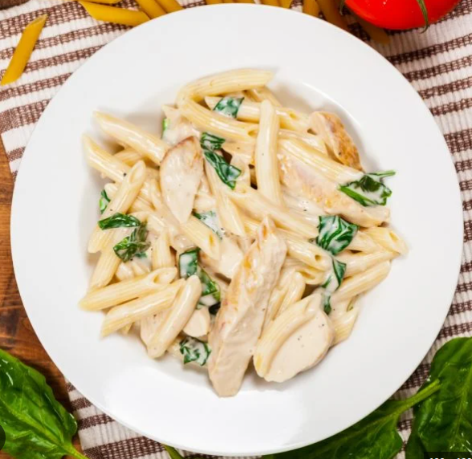

Pasta

Description
Heat the oil in a non-stick pan over a medium-low heat. Add the onion along with a generous pinch of salt and fry for 10 mins, or until soft. Add the garlic and chilli, if using, and cook for a further minute.
Stir the tomatoes, anchovies, olives and capers into the onion, bring to a gentle simmer and cook, uncovered, for 15 mins. Season to taste.
Ingredients
Steps
- Meanwhile, bring a large pan of salted water to the boil. Cook the spaghetti following pack instructions, then drain and toss with the sauce and parsley.
- Meanwhile, bring a large pan of salted water to the boil. Cook the spaghetti following pack instructions, then drain and toss with the sauce and parsley.
- Meanwhile, bring a large pan of salted water to the boil. Cook the spaghetti following pack instructions, then drain and toss with the sauce and parsley.
- Meanwhile, bring a large pan of salted water to the boil. Cook the spaghetti following pack instructions, then drain and toss with the sauce and parsley.